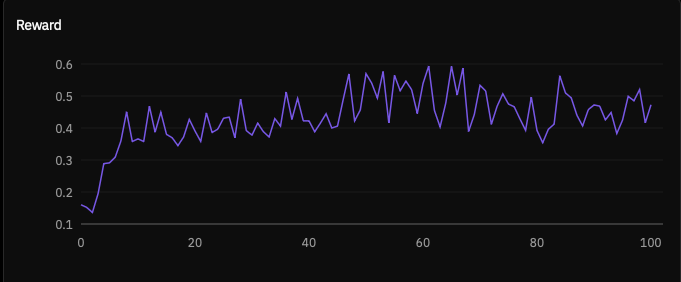
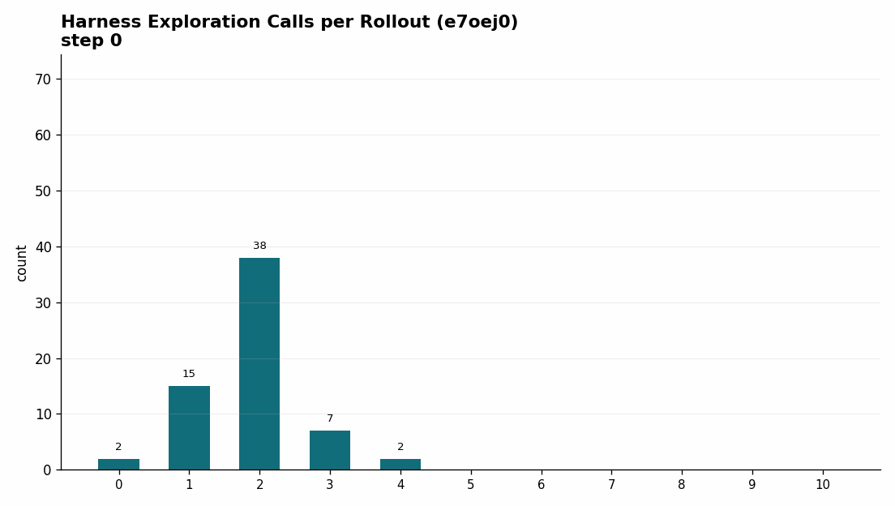
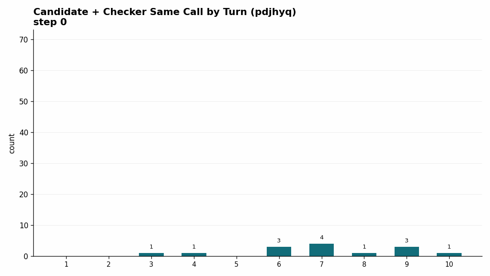
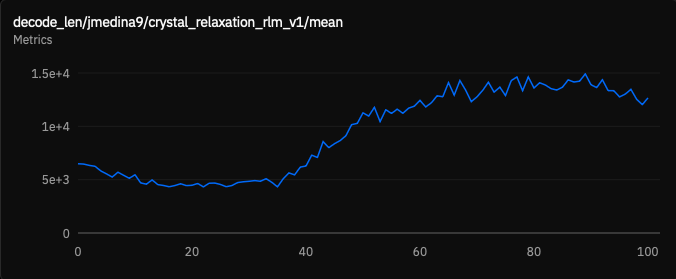
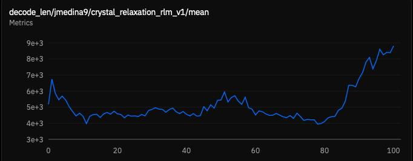
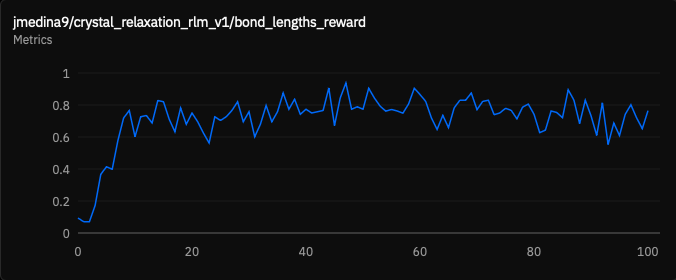
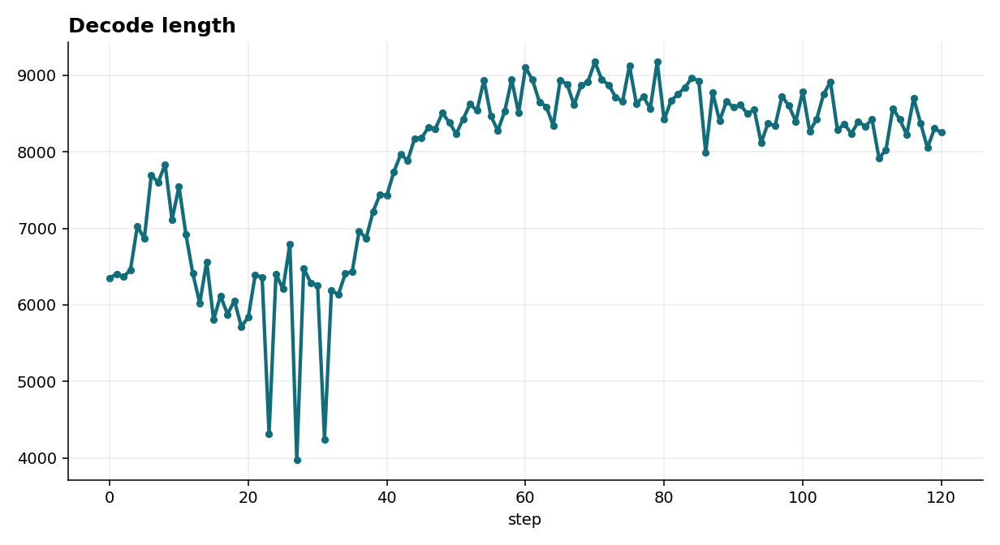
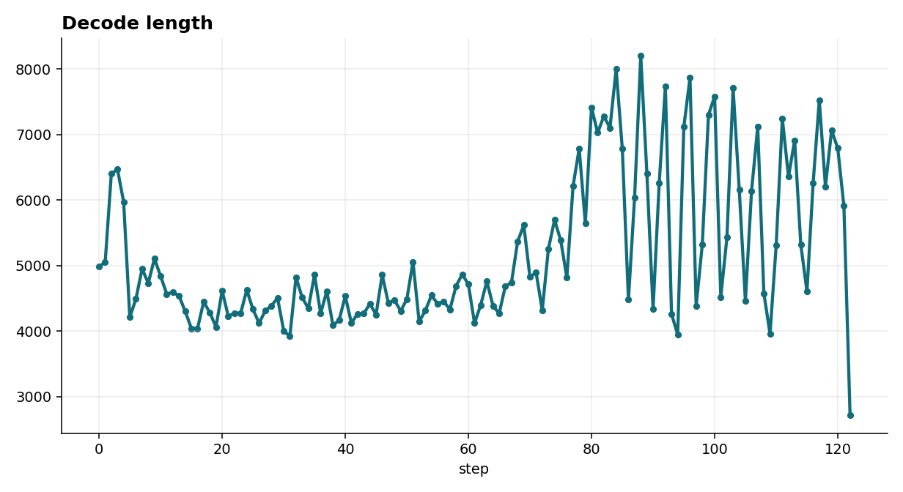

Opening question
Writing about RL has too many entry points.
You can write about gradients, losses, advantages, and updates. You can write about the model. Did it learn? What did it learn? How did it learn?
The middle level is the useful one here. The model reads files. It writes code. It calls a checker. It revises a CIF. It decides when to stop.
The RLM setup made crystal relaxation more agentic. It made the task easier to inspect. It did not make the physics easy. The model learned the workspace. The traces exposed the failures. Formation energy stayed hard.
From MultiTurnEnv to RLM
The original crystal relaxation environment was a classic MultiTurnEnv. The model received an unrelaxed crystal structure. It proposed a relaxed version. The environment gave feedback. The model tried again. That worked. It also forced a chat-shaped rhythm: answer, feedback, answer, feedback.
The RLM version changes the unit of work. A task is a small filesystem with an input.cif, skills, a sandbox, and a required /task/final.cif.
Dataset row
| id | prompt | info | solution |
|---|---|---|---|
mp-690760 | Relax this crystal structure. | {unrelaxed_cif, composition, target_energy} | relaxed_cif |
mp-976260 | Return a lower-energy CIF. | {mp_id, cluster, reference_metrics} | relaxed_cif |
Taskset question
/task |-- prompt.txt |-- inputs | `-- input.cif |-- rlm-skills | `-- check_structure | |-- SKILL.md | `-- src/... |-- workdir | |-- candidate.cif | `-- scratch.py `-- final.cif
input.cif, workspace state, and final artifact paths.final.cif and computes format, composition, geometry, and energy rewards.The old setup tested short repair. Emit a plausible CIF. Read feedback. Try again. The RLM setup tests agent work. Inspect the input. Use Python. Call a checker. Revise a candidate. Converge on a better structure.
RLM search
Prime Intellect's rlm_search environment was the useful reference. Same pattern. Different domain. It runs web search and research tasks instead of crystal relaxation. The taskset can switch between QUEST, OpenSeeker, and REDSearcher. The model gets local skills such as websearch and open_webpage. The answer goes to /task/answer.txt. The scorer reads the file.
The implementation is small and clarifying. load_environment builds a search taskset. It attaches the bundled skills directory. It appends the final-answer file contract to the system prompt. It creates an rlm_harness. It wraps everything in a ComposableEnv. The selected taskset owns scoring. The harness owns the sandbox workflow. My crystal environment follows the same shape: taskset owns files, harness owns work, scorer reads the final artifact.
RLM harness
The RLM harness is deliberately narrow. It is a training harness for agentic rollouts. It is not a general chat UI. The model gets a long-lived IPython control surface as its built-in tool. From there it can read and write files, run shell commands through explicit bash cells, call installed skills, and optionally spawn recursive sub-agents when recursion is enabled.
At runtime, the harness builds a system prompt from the working directory, session log path, installed skills, recursion setting, and active tool set. Then it runs a simple loop. Call the model. Allow one built-in tool call. Execute it. Append the observation. Log the turn. Repeat until the model stops or hits budget. Every run writes a session directory with metadata, messages, tool results, and child sessions. That trace made the crystal experiments inspectable.
Checker skill
The main implementation step was translating the old MultiTurnEnv feedback function into a skill. In the old environment, feedback was automatic. After every model answer, the environment returned a score and diagnostic text. In the RLM environment, the model has to decide when to ask for that feedback.
candidate CIF -> check_structure -> parseable?
-> composition correct?
-> bond lengths reasonable?
-> formation energy acceptable?
-> force proxy reasonable?
-> feedback text
The checker gave the model agency. It also created a control problem. A free checker becomes an infinite checker. So I added a check budget. Roughly, two old feedback turns became two allowed RLM checks.
The wording of the skill is a hyperparameter. If the skill encourages broad exploration, the model explores. If it makes the checker feel central, the model checks earlier. The tool changes the policy we train.
Prompt contract
The system prompt is shared across tasks. The task family is shared too: start with an unrelaxed structure and produce a relaxed one. The individual question can stay generic. The per-example information lives in input.cif. The prompt does not need every detail. The filesystem does.
write the best candidate structure to /task/final.cif
That removes a whole class of answer-extraction problems. No CIF extraction from chat. No tag parsing. No prose cleanup. The artifact is the answer.
One scaling detail matters. The expensive final reward does not require a full scoring model inside every rollout sandbox. The model writes /task/final.cif. The rollout stops. The environment keeps the sandbox alive long enough for scoring to read the file and run the private checker path. In code, this is keep_sandbox_for_scoring=True. The sandbox is the artifact container. It is not a replicated model host.
During the rollout, the agent gets bounded public feedback through the checker skill. After the rollout, final scoring uses the hosted formation-energy model once, centrally, against the saved final CIF. That keeps RLM training scalable. Thousands of sandboxes can hold files and run lightweight tools. The heavier model-backed reward is paid only at the end of each trajectory.
Metadata leak
Lesson: in an RLM environment, the filesystem is part of the prompt.
The first serious implementation bug was a data leak. In the previous dataset paradigm, each example had an info object. It was useful for reward computation because it could hold metadata hidden from the model. When I moved to a filesystem task, I initially included too much of that metadata in the workspace.
One leaked field was the original Materials Project id. The model noticed. It tried to look up the material through the Materials Project API. It stopped behaving like a relaxation agent. It started behaving like a lookup agent.
Anything placed in the task directory should be treated as visible model context. Private scorer metadata has to stay private.
Baselines
Before training, I needed to know whether the RLM version was viable at all. The answer was yes. The caveat was large. Classic stayed easier in short runs. It gives feedback in a tight, controlled loop. Strong frontier models can nearly saturate it.
| Surface | Model | Run shape | Mean reward | pass@1 | pass@2 | Notes |
|---|---|---|---|---|---|---|
| Classic | GPT-5.5 | 25x3 | 0.998 | 1.000 | 1.000 | Best corrected classic run. |
| Classic | GPT-5.5 | 25x3, 3 turns | 0.758 | 0.760 | 0.880 | Strong with 32% model/API errors. |
| RLM | GPT-5.5 | 25x3, 15 turns, 5 checks | 0.783 | 0.733 | 0.760 | Best RLM run so far, 55/75 full-credit rollouts. |
Classic tests short direct repair. RLM tests tool-mediated scientific work. Early RLM looks worse for a simple reason. The model has two jobs. Learn the harness. Learn the filesystem. Learn the tools and final-file contract. Then solve the chemistry. Classic removes much of that interface burden by giving feedback in the same chat loop every time.
That matters for training. Parser failures teach almost nothing. A failed low-energy search teaches something. If the model preserved composition and bond lengths, I know where the policy is weak.
Budget and infrastructure
| Eval | Budget | Mean reward | pass@1 | pass@2 | Full credit | Interpretation |
|---|---|---|---|---|---|---|
45491238 | 5 turns / 1 check | 0.618 | 0.493 | 0.587 | 37/75 | Strong short-budget RLM reference. |
003b7c4d | 10 turns / 3 checks | 0.341 | 0.240 | 0.347 | n/a | Dependency/interpreter path issue. |
34ff5575 | 10 turns / 3 checks | 0.516 | 0.440 | 0.520 | 33/75 | Cleaner dependency path. |
60cf0943 | 15 turns / 5 checks | 0.783 | 0.733 | 0.760 | 55/75 | Best RLM result so far. |
At first, the larger trusted-image run looked like a regression. The later non-trusted rerun changed the story. More turns were not the problem. Once the dependency path was clean, increasing from 10 turns / 3 checks to 15 turns / 5 checks helped GPT-5.5 a lot.
Cross-model
| Model | 10/3 mean | 15/5 mean | Delta | What changed |
|---|---|---|---|---|
| GPT-5.5 | 0.516 | 0.783 | +0.267 | Converted extra checks into full-credit structures. |
| GPT-5.4-mini | 0.376 | 0.408 | +0.032 | Reliable format/composition, weak energy recovery. |
| Gemini 2.5 Flash | 0.297 | 0.259 | -0.038 | More budget did not improve composition or energy. |
| Claude Haiku 4.5 | 0.303 | 0.454 | +0.151 | Benefited from budget. Used many turns. |
Candidate plus checker

Training diary
The training runs are where the RLM setup became most interesting. The batch-128 run peaked around step 70. The batch-256 run peaked around step 90, with mean reward around 0.527.
Reward moved. Workflow moved too.
Training reports
Start here for the raw details. The reports are interactive HTML audits with step controls, rollout tables, tool-call tags, error taxonomies, and matching scalar metric plots in each run folder.
Earlier reports
Earlier batch-128-style run
The first strong behavior-shift report: early checker use moved from late rollout turns to near the start, with many same-call generate/check loops.
{kind=link}
Earlier batch-256-style run
The companion report used in this post's first training narrative, with reward peaking around step 90 and then easing slightly by step 100.
{kind=link}
Latest reports
Run x7b6izu...
New 10-turn / 2-check batch-256 run. Rollout samples are available through step 120; scalar metrics extend to step 122. This run reached about 500 in-flight rollouts.
{kind=link}
{kind=link}
Run o8spwu...
New 10-turn / 2-check batch-256 run. Rollout samples are available through step 120. This is the run capped at about 200 in-flight rollouts.
{kind=link}
{kind=link}
Batch 128 reward

Batch 256 reward

Harness exploration
The first behavior was not chemistry. It was orientation. The model spent budget learning the harness. Read the input. Read the skill. List files. Probe the sandbox. Try Python. Sometimes it never wrote a useful candidate.
That exploration was expensive. It used turns. It used decode length. It created timeouts. Timeouts were zero-reward trajectories.
One of the quickest training changes was simple: stop wasting turns on orientation. Read what matters. Act earlier. Call the checker earlier. Avoid timing out.
That is one reason decode length and number of turns drop sharply early in training. The model is not becoming less capable. It is becoming less lost.
Later in training, it checked earlier and combined candidate generation with checker calls inside the same tool turn.
Harness calls

Code writing
The RLM setup made code quality visible. That was new. The model was not graded on Python style. Still, Python quality controlled the rollout. Bad imports blocked geometry analysis. Bad loops blocked distance checks. Silent code produced no signal.
The eval baselines separated two abilities. Some models wrote cleaner tool code. Some models used messy code and still got better structures.
| Model | Clean eval signal | Code-writing read |
|---|---|---|
| GPT-5.5 | Best reward: 0.783 at 15 turns / 5 checks. Tool-error rate about 12.5%. | Strongest problem solver. More willing to use Pymatgen, tools, and longer workflows. More exposed to import errors, timeouts, and type errors. |
| GPT-5.4-mini | Lower reward: 0.408 at 15 turns / 5 checks. Tool-error rate about 2.6%. | Cleaner mechanics. Good at format, composition, and file handling. Less effective at turning code into low-energy structures. |
| Gemini 2.5 Flash | Tool-error rates stayed around 1-3% on clean runs. Reward did not improve with more budget. | Concise and low-error. Often wrote enough file-management code to finish. Less evidence of useful deeper search. |
| Claude Haiku 4.5 | Tool-error rate about 2.1% at 15 turns / 5 checks. Reward rose to 0.454. | Best low-error code behavior among the non-GPT runs. It used more turns and did more analysis. Expensive. More systematic. |
Training changed the bug profile too. At step 0, the runs were full of raw coding failures. The batch-256-style run had 94 runtime code errors, 23 syntax errors, and 10 import errors across 610 tool calls. The batch-128-style run had 79 runtime code errors, 30 syntax errors, and 10 import errors across 636 tool calls.
The common bug types were stable: wrong Pymatgen imports and API expectations, manual CIF parsing shape assumptions, undefined variables after long scratch code, syntax errors from bad comprehensions or unmatched delimiters, code with no useful printed signal, and CIFs written by code and rejected by parser checks.
By later checkpoints, the raw Python bugs dropped sharply. In the batch-256-style run, errors fell from 131/610 tool calls at step 0 to 8/526 at step 100. In the latest high-concurrency run, errors fell from 108/586 at step 0 to 12/499 at step 120.
That is one of the clearest signs of learning. The model learned to write code that ran. Then it learned to make that code useful. The remaining failures moved from syntax and imports toward CIF validity, energy, and checker-budget tradeoffs.
Error modes

Multi-action turns
| Run / step | Mean reward | Mean first checker turn | Candidate + checker events | What it looked like |
|---|---|---|---|---|
| Batch-128, step 0 | 0.163 | 4.56 | 14 | Harness and file exploration, Python errors, delayed checking. |
| Batch-128, step 70 | 0.566 | 1.36 | 514 | Peak reward, early checker use, many same-call loops. |
| Batch-128, step 100 | 0.470 | 1.35 | 514 | Still efficient. Below peak reward. |
| Batch-256, step 0 | 0.168 | 4.19 | 6 | Similar early harness exploration. |
| Batch-256, step 90 | 0.527 | 2.19 | 188 | Peak reward, more same-call checking than the start. |
| Batch-256, step 100 | 0.510 | 2.30 | 294 | More checker use. Slightly below the reward peak. |
Batch 128 candidate/checker

Batch 256 candidate/checker

Starting traces looked like: read input.cif, read the skill, inspect the sandbox, look for available files, write ad hoc parsing code, hit a Pymatgen API assumption, hit a syntax or runtime error, maybe write a candidate, maybe check it too late.
Later traces looked more like: inspect the input, write a candidate, run the checker in the same tool call, revise based on feedback, and repeat until budget exhaustion or success. That is a real policy change.
Length and efficiency
In many RL settings, harder problems bias models toward longer reasoning. That happened here too. The RLM version looked different. It was longer or denser tool workflow. More files. More code. More checks.
- Early training starts near the maximum length or turn budget because the model is inefficient.
- Decode length and tool use decrease as the model learns easy reward components like format, composition, and bond lengths.
- Length can increase again once those easy components saturate and the remaining gain has to come from harder formation-energy improvements.
Batch 128 decode length

Batch 256 decode length

Batch 128 bond-length reward

Batch 256 formation-energy reward

The better RLM question may not be "How do we make the model shorter?" It may be: when is extra tool use useful search, and when is it just wasted motion?
Scheduler hypothesis
The latest long runs added one caveat to the length story. The capped run, o8spwu..., repeatedly sat at about 200 in-flight rollouts. It never showed the usual late length collapse. Mean turns moved from about 9.9 at step 0 to about 9.3 at step 120. Mean decode length was still about 8254 tokens. Reward peaked early at 0.467 and ended around 0.412.
The comparison run, x7b6..., reached about 500 in-flight rollouts. It showed the stronger length shift, with mean turns falling to about 3.7 and mean decode length to about 2717 tokens by step 122. It also hit a higher reward peak, 0.623 at step 116, before falling at the end.
The logs make this a hypothesis, not a controlled result. The capped run mostly reported Max Off-Policy values of 1-2. The higher-concurrency run reached Max Off-Policy 3 late in training. More in-flight rollouts may widen the age spread of samples, so updates see more trajectories from weaker earlier policies that are still biased toward easy gains and shorter workflows.
| Run | Observed in-flight | Max Off-Policy | Reward peak | Length behavior | Interpretation |
|---|---|---|---|---|---|
o8spwu... | about 200 | 1-2 | 0.467 at step 20 | Turns stayed high, about 9.3 late. | Capped concurrency, little length collapse, no late reward jump. |
x7b6... | about 500 | 0-3 | 0.623 at step 116 | Turns fell to about 3.7 late. | Higher concurrency. Larger off-policy lag. Stronger, less stable behavior shift. |
200 in-flight decode

{kind=link}
500 in-flight decode

{kind=link}
Failure modes
The early step-0 audits were full of useful failure modes: too much harness exploration, brittle manual CIF parsing, Pymatgen API assumptions, syntax errors, runtime errors, Python code with no print statements, checker calls used too late, and candidate CIFs never copied to the final answer path.
At one point, the step-0 audit counted 610 executed tool calls across 64 parsed samples, with mean reward 0.168. It included 94 runtime code errors, 23 syntax errors, and many Pymatgen expectation failures.
By the later checkpoints, the failures changed. There were fewer broad exploratory mistakes. There were more checker-centered loops. The model still failed. The failures moved toward the hard objective: formation energy, force proxy, check-budget exhaustion, or sandbox setup before the rollout could begin.
Learned behavior
The cleanest interpretation is component-wise. Format became easy. Composition became learnable. Bond lengths improved with budget and training. Formation energy stayed hard.
write a valid CIF -> preserve composition -> avoid bad local geometry -> reduce energy enough -> finish within the turn and check budget
The model did not climb that ladder uniformly. Different models got stuck at different rungs.
Next changes
The next version should treat budgets as part of the curriculum. If a model is still failing format or composition, extra formation-energy search is wasted. If it has saturated format, composition, and bond lengths, then maybe it needs more checker budget, more local search, or a different skill description.
I would also keep separating infrastructure failures from model failures. In the best GPT-5.5 RLM run, the zero-reward tail was mostly sandbox readiness. That should not be interpreted the same way as a model producing a bad CIF.
The biggest operational bottleneck is sandbox count. RLM training needs many sandboxes. The cost driver moves from pure generation to generation plus sandbox lifecycle plus tool execution.
Conclusion
RLM is a viable way to train crystal relaxation agents. It also points beyond this task. Training changed strategies and scores. The model learned to pack more useful work into a turn. Generate. Check. Revise. It used code for distances and angles instead of guessing from text. It made fewer syntax, runtime, and API mistakes. That is the broader promise of rlm-harness: train the whole work loop.
It does not magically beat the classic environment on every metric. Classic direct feedback is still easier. It is cleaner for short repair.
The important shift is that the RLM formulation made training possible at a smaller scale. In the old MultiTurnEnv setup, useful behavior seemed to require at least roughly 30B-parameter models. With the filesystem, skill, and checker loop exposed as an RLM task, I could train a 9B model and watch it learn a workable scientific workflow.
RLM trains and measures a different object: a model working inside a small scientific workspace. Read files. Write code. Use a checker. Revise artifacts. Leave a trace.
That trace changed the project. It made implementation bugs visible. It made model behavior visible. It made reward improvements easier to interpret. It showed the model learning better workflow.
Artifacts
- Markdown draft
- Public RLM search environment
- RLM harness source
- Earlier HTML narrative
- RLM eval analysis
- New training analysis, x7b6izu 10t/2c run
- New training analysis, o8spwu 10t/2c run
- Training analysis, batch-256-style run
- Training analysis, batch-128-style run
- Transition notes
- Training observations